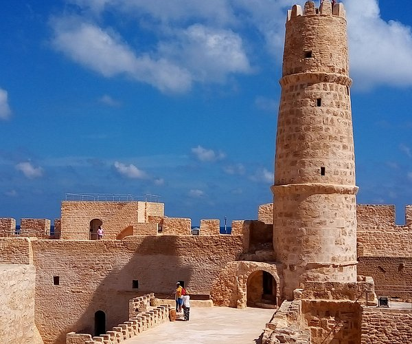

Visit Monastir
Enjoy culture and sports in Monastir with our guide
Enjoy Top Three Activities to do at Monastir

Location
Ribat Sea Marina is located in Monastir, Tunisia, right next to the famous Ribat fortress and overlooking the Mediterranean Sea. It’s a scenic spot combining history and coastal charm.

Attractions
The marina features elegant yachts, cozy cafés, restaurants, and a relaxing promenade. Visitors can enjoy sea views, sunset walks, and easy access to nearby historical landmarks.

Activities
Guests can explore the old Ribat, take boat trips, go diving, or simply unwind by the waterfront. The marina offers a peaceful atmosphere ideal for both locals and tourists.